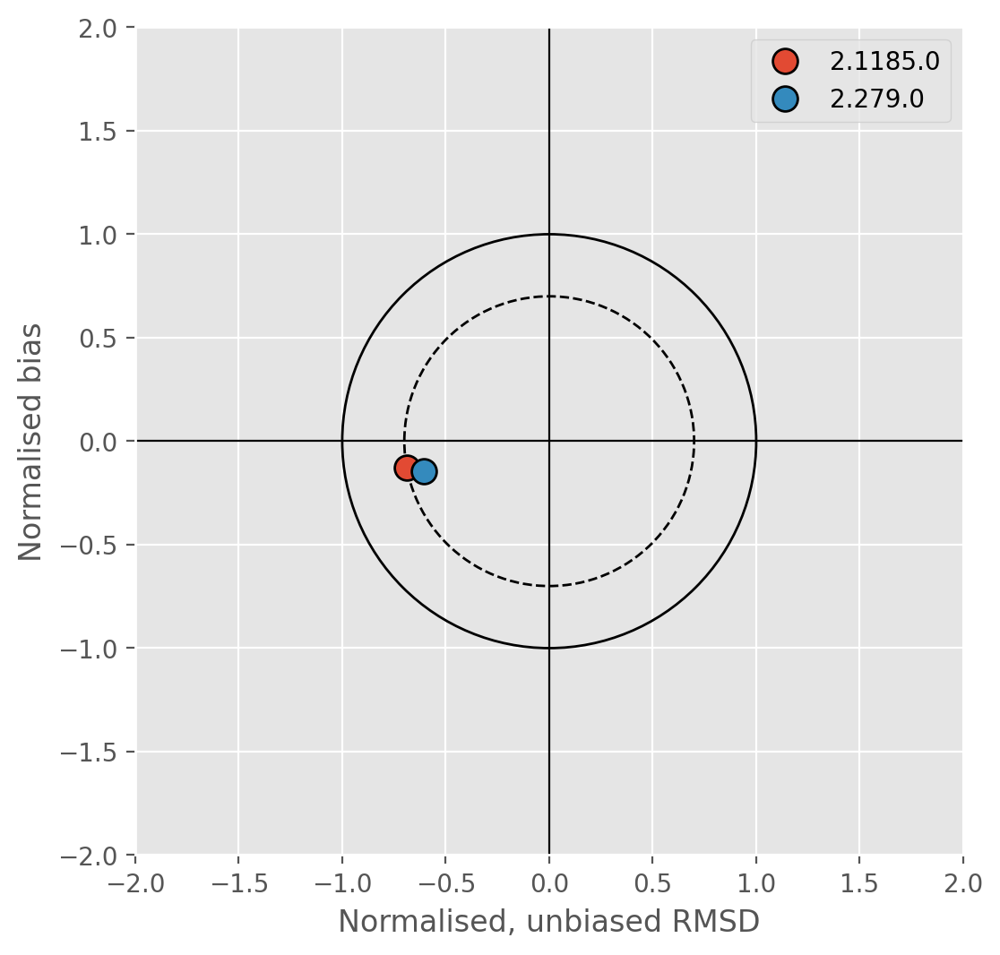

| Nedbørfelt | Vannmiljø-ID | Stasjonsnavn | REGINE-ID | Vannforekomst-ID | Vannforekomstnavn | Lengdegrad | Breddegrad |
|---|---|---|---|---|---|---|---|
| Sagelva | 002-46599 | Sagelva ved Skjetten bro (F3) | 002.CBA0 | 002-3899-R | Fjellhamarelva - Sagelva | 11.016950 | 59.958500 |
| Sagelva | 002-63540 | Fjellhammarelva (F10) | 002.CBA0 | 002-3899-R | Fjellhamarelva - Sagelva | 10.996170 | 59.944190 |
| Nitelva | 002-30586 | Rud Nitelva (N8 ) | 002.CB0 | 002-3891-R | Nedre Nitelva | 11.057000 | 59.945530 |
| Nitelva | 002-30578 | Kjellerholen Nitelva (N6) | 002.CC0 | 002-1638-R | Nitelva Slattum-Kjeller | 11.008500 | 59.979250 |
| Leira | 002-29659 | Leira ved Borgen bru (L5) | 002.CAA0 | 002-3384-R | Leira nedstrøms Krokfoss | 11.100320 | 59.950360 |
| Leira | 002-30584 | Leira ved Leirsund (L8) | 002.CAA0 | 002-3384-R | Leira nedstrøms Krokfoss | 11.088490 | 59.997550 |
| Rømua | 002-28960 | Rømua ved Lørenfallet - RØM1 | 002.D2Z | 002-3659-R | Rømua | 11.220990 | 60.021630 |
| Jeksla | 002-30593 | Jeksla ved Haugli, J14 | 002.CAA0 | 002-599-R | Jeksla | 11.106370 | 60.001990 |
| Åa | 002-60929 | Fossåa ved Sylta (ÅA1) | 002.D3Z | 002-3685-R | Fossåa | 11.300180 | 59.992090 |
| Åa | 002-60963 | Sloråa ved Bruvollen (ÅA3) | 002.D3Z | 002-3687-R | Sloråa | 11.348070 | 59.985120 |
| Åa | 002-60964 | Kauserudåa før samløp Sloråa (ÅA4) | 002.D3Z | 002-3692-R | Stensrudåa - Korsåa | 11.348230 | 59.983910 |
| Gansåa | 002-60933 | Gansåa nedstrøms Dalen RA (BD) | 002.C5 | 002-3655-R | Gansåa | 11.222750 | 59.861390 |
3 Data sources and models
3.1 Water chemistry
Water chemistry data are available from Vannmiljø, the national water chemistry database maintained by Miljødirektoratet. At the start of this project, Lillestrøm kommune provided a list monitoring stations with good quality data in each catchment of interest.
Catchments in Norway are also divided into waterbodies according to Vannforskriften, which is Norway’s implementation of the EU Water Framework Directive (WFD). The Vann-nett portal uses data from Vannmiljø to assign each waterbody a status (high, good, moderate, poor or bad) based thresholds defined in Vannforskriften for each parameter or quality element.
Table 3.1 lists the main monitoring stations in each catchment and identifies the corresponding WFD waterbody for each station. The WFD status for a waterbody displayed in Vann-nett may combine data from multiple stations, so for this analysis two sets of data were downloaded: (i) monitoring data for the specific stations suggested by Lillestrøm kommune, and (ii) all monitoring data used to assign status for each waterbody in Vann-nett. The first dataset provides the best available time series for individual points, whereas the second offers a more aggregated assessment (often with greater variability) and reflects the data used by water managers to set water quality targets.
All water chemistry data were downloaded programmatically via Python using the Vannmiljø and Vann-nett Application Programming Interfaces (APIs). See notebook 02 for details.
3.2 Water discharge
Water discharge is monitored by Norges vassdrags- og energidirektorat (NVE). However, discharge monitoring for the water chemistry stations of interest (Table 3.1) is limited. The outflow of Sagelva is monitored by NVE discharge station 2.1185.0, which corresponds directly to Vannmiljø station ID 002-46599. The only other NVE station with data within the catchments of interest is at Kråkfoss (2.279.0) on Leira, but this is much further upstream than any of the chemistry monitoring stations.
In cases where direct monitoring of discharge is not available, NVE publishes modelled estimates of daily discharge via the Grid Time Series (GTS) API. Simulations are based on a spatially distributed version of the HBV model developed by Beldring et al. (2003). For catchments without direct monitoring, the GTS API provides the best available estimates of river flow, but NVE’s model does not include detailed flow-routing or water transfers between catchments (e.g. for drinking water or hydropower). It is therefore necessary to evaluate the GTS API for catchments around Lillestrøm kommune.
Figure 3.1 compares simulations from NVE’s model with observed discharge at stations 2.1185.0 (Sagelva) and 2.279.0 (Kråkfoss, Leira). The comparison period extends from 2015 to 2025 for Sagelva and from 1980 to 2025 for Kråkfoss. Overall, the model performs reasonably well, with Nash-Sutcliffe efficiencies of approximately 0.6 at both sites. However, results indicate a slight negative systematic bias (y-axis), suggesting that NVE’s model tends to underpredict discharge on average. The principal limitation is that the model underestimates discharge variability (x-axis), producing a smoother signal with lower standard deviation than the observed series. This tendency is common in hydrological models.
Based on this assessment, NVE’s modelled discharge appears to be suitable for estimating nutrient loads at monitoring stations where direct discharge measurements are not available. This means all stations listed in Table 3.1 except 002-46599.

2.1185.0 (Sagelva) and 2.279.0 (Kråkfoss, Leira). The y-axis shows normalised bias between simulated and observed. The x-axis is the unbiased, normalised root mean square difference (RMSD) between simulated and observed data. The distance between a point and the origin is total RMSD. RMSD = 1 is shown by the solid circle (any point within this has positively correlated simulated and observed data and positive Nash-Sutcliffe scores); the dashed circle marks RMSD = 0.7.
3.3 Nutrient inputs
In addition to monitoring data, source-specific nutrient inputs have been estimated from available national and regional datasets.
3.3.1 Municipal wastewater
Municipal wastewater treatment plants with capacity ≥50 person equivalents (p.e.) are required to monitor and report nutrient discharges to Miljødirektoratet via ALTINN. These data are made available to NIVA as part of national scale modelling projects using TEOTIL3 (Section 3.4.2).
Raw data are cleaned and statistically interpolated using a methodology based on Statistisk Sentralbyrå’s (SSB’s) procedure for national wastewater statistics (e.g. Berge & Hjertaas, 2024). Where wastewater discharges are monitored, these values are used directly. Otherwise, discharges are estimated based on plant capacity (number of people connected, in p.e.) and assumed default treatment efficiencies that vary according to treatment type (provided by Miljødirektoratet; here).
3.3.2 Other wastewater
For small wastewater treatment plants (capacity <50 p.e.) and systems that are not connected to the municipal wastewater network (e.g. septic tanks), SSB compiles aggregated discharge statistics at municipality level. These sources are commonly referred to as “spredt avløp” (scattered wastewater discharges). For this project, Lillestrøm kommune provided a more detailed dataset, including locations of individual septic tanks and small treatment plants (minirenseanlegg), as well as information on stormwater and emergency overflows from the municipal wastewater network within the municipality.
For the modelling in this project, SSB data were used for all municipalities except Lillestrøm, where the more detailed, site-specific dataset was used instead. It should be noted, however, that SSB’s dataset covers a longer time period than the Lillestrøm-specific data. Consequently, the spredt dataset prepared for this project provides higher spatial resolution within Lillestrøm kommune than standard national datasets, but with slightly reduced temporal resolution.
A detailed comparison of the national and Lillestrøm-specific spredt datasets is provided in notebook 05.
3.3.3 Industry
Data describing industrial discharges has been provided by Miljødirektoratet. Data collection is based on self-reporting from industry and reflects the components regulated in the respective discharge permits. Data are consistent with the information made publicly available via the Norske utslipp website.
3.3.4 Agriculture
Annual estimates of nutrient losses from agriculture are made by NIBIO using the AGRITIL models (Kværnø et al., 2024). See Section 3.4.1.
3.3.5 Urban
Estimates of nutrient runoff from urban areas have been made using typical runoff coefficients for Norwegian built-up areas taken from Åstebøl et al. (2012).
3.3.6 Background
Estimates of annual nutrient inputs from runoff in forest and upland areas are made by NIVA using long-term national monitoring data. Key datasets include the Norwegian “1000 Lakes” surveys in 1995 and 2019, and the ongoing “Trend lakes” project. See de Wit et al. (2023) for an overview.
3.4 Water quality models
3.4.1 AGRITIL
The AGRITIL models (Kværnø et al., 2024) have been used to estimate nutrient losses from agricultural land to first-order streams. AGRITIL provides source-specific input data for agricultural runoff to TEOTIL3 (Section 3.4.2) and consists of separate empirical models for nitrogen (AGRITIL-N) and for suspended sediment, phosphorus and organic carbon (AGRITIL-SPC). The models are calibrated using data from the Norwegian Agricultural Environmental Monitoring Programme (JOVA) and are designed to quantify gross nutrient and sediment losses from agricultural areas under varying environmental conditions and management practices.
AGRITIL-N simulates losses of total nitrogen (TOTN) and nitrate (NO3) from agricultural land. Predicted nitrogen losses are influenced by factors such as runoff, nitrogen balance, soil type, climatic conditions, and the implementation of mitigation measures including winter vegetation cover, catch crops and reduced tillage.
AGRITIL-SPC simulates losses of suspended sediment (SS), total phosphorus (TOTP), phosphate (PO4) and total organic carbon (TOC). Model estimates are based on relationships between nutrient and sediment losses, hydrological conditions, soil properties, land use, erosion risk, and agricultural management practices.
AGRITIL estimates losses from agricultural land at the edge-of-field or first-order stream scale and does not account for nutrient retention occurring downstream. Downstream transport and retention processes are subsequently represented within TEOTIL3.
3.4.2 TEOTIL3
The TEOTIL3 model (Sample et al., 2024) has been used to simulate source-apportioned nutrient inputs for each catchment of interest. TEOTIL3 was also used to estimate the load reductions required for Good Ecological Status (GES) under the Water Framework Directive, as well as the extent to which reductions might be achieved using combinations of measures (based on Wallhead et al., 2026).
TEOTIL3 is an annual mass balance model that simulates the following nutrients:
- Total nitrogen (TOTN) and the main fractions of nitrogen: dissolved inorganic nitrogen (DIN) and total organic nitrogen (TON).
- Total phosphorus (TOTP) and the main fraction of phosphorus: total dissolved phosphorus (TDP) and total particulate phosphorus (TPP).
- Total organic carbon (TOC).
- Suspended sediment (particles; SS).
TEOTIL3 includes a simple hydrological transport module that simulates nutrient retention in lakes, but not in rivers. The model considers nutrients from the following sources (using datasets described in Section 3.3):
- Inputs from agriculture simulated by NIBIO using the AGRITIL models.
- Discharges from large wastewater treatment plants (≥50 p.e.).
- Direct inputs from industrial plants not connected to the municipal wastewater network.
- Discharges from small wastewater treatment plants (<50 p.e.; referred to as “spredt avløp”).
- Nutrient runoff from urban areas.
- Nutrient losses from aquaculture in seawater (not relevant for Lillestrøm kommune).
- Atmospheric deposition of nitrogen directly to lake surfaces.
- Natural background runoff from forest, upland and glacier areas.
TEOTIL3 does not include temporary sources of nutrients, such as construction sites or road building. The standard version of the model also omits overflows from the municipal wastewater network, but for this project the model has been extended to include overflow data provided by Lillestrøm kommune (see Section 3.3.2).